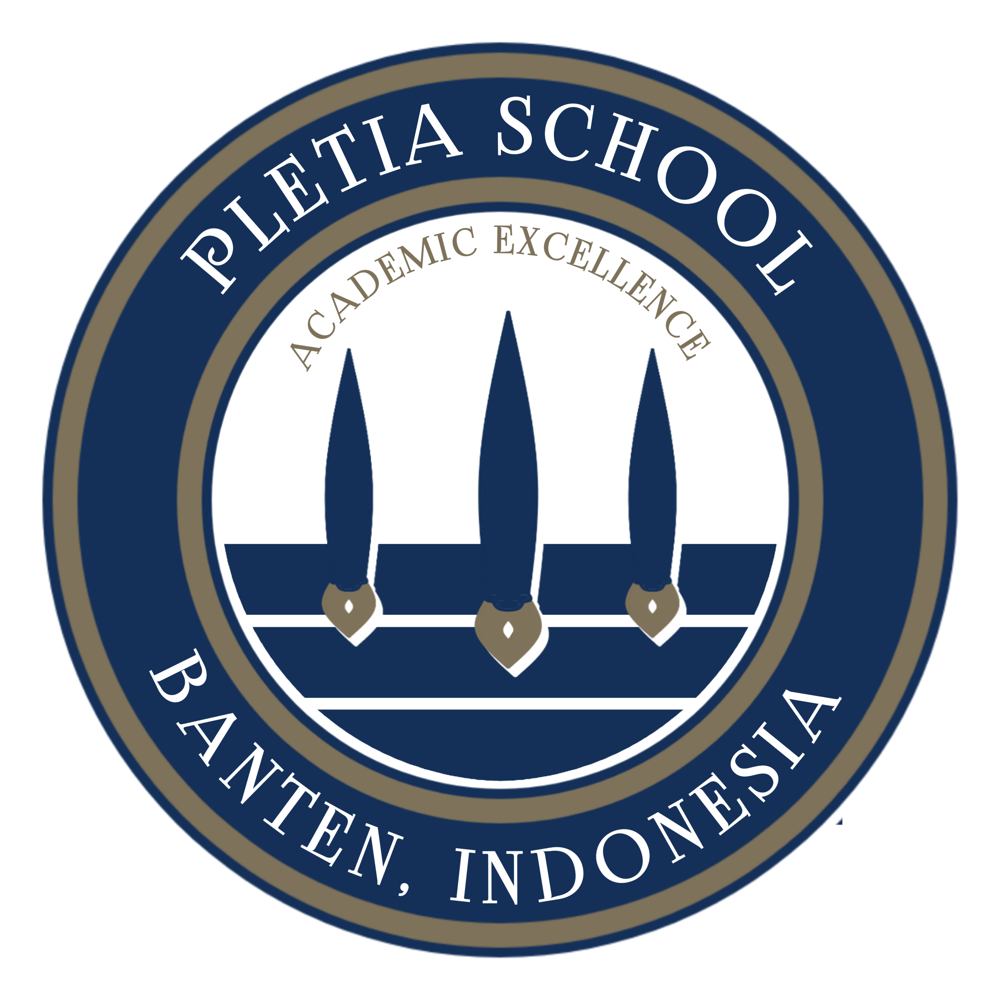

PLETIA SCHOOL
Academic Excellent
Academic Excellent
 Pletia School adalah SMA di Indonesia, SMA ini merupakan salah satu SMA terbaik.
Kegiatan demo Extrakurikuler bertujuan untuk mengenalkan kepada siswa/siswi apa saja Extrakurikuler yang ada di sekolah. Extrakurikuler yang terdiri Dari Volly, Basket, hadroh...
Kegiatan demo Extrakurikuler Sekolah Pletia bertujuan untuk mengenalkan kepada siswa/siswi apa saja Extrakurikuler yang ada di sekolah. Extrakurikuler yang terdiri Dari Volly, Basket...
Simulasi ANBK yang diadakan pada hari senin tanggal 08 Agustus 2022 berlangsung tertib dan lancar, ANBK akan berlangsung s/d hari kamis 11 Agustus